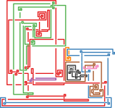
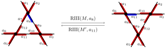
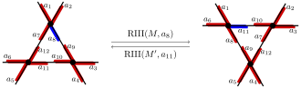

A Markov Chain Sampler
for Knot Diagrams
Colorado State University
University of British Columbia
Special Section on Mathematical Methods for the Study
of the Three Dimensional Structure of Biopolymers
AMS 2018 Fall Western Sectional Meeting
SFSU, San Francisco CA
October 28th 2018
Knot Diagrams
Crossings are the primary components of knot diagram models

Knot Diagrams and Knot Shadows
4-valent Maps
A 4-valent map is a 4-valent graph embedded in the sphereKnot Shadows
A knot shadow or plane curve is a 4-valent map with one link component, and vertices viewed as crossingsKnot Diagrams
A knot diagram is a knot shadow with crossing signs indicating depthKnot Diagrams and Link Diagrams

Crossings as Self-contacts
Crossings may be viewed as self-contacts where enzymes may act to change DNA topology

Strand passage action, e.g. topo-IV

Coherent smoothing action, e.g. XerCD-dif-FtsK complex
Uniform Random Sampling
Direct sampling
No known algorithms for directly sampling knot diagrams uniformly
Related to lack of exact enumeration \(\{k_n\}\) for knot diagrams \[ k_n \sim C\mu^n n^{\gamma-2}(1 + O(1/\log n)) \quad \text{(conj.)} \]
Uniform Random Sampling
Rejection sampling
Sample 4-valent maps uniformly, but only accept knot diagrams
- Samples diagrams of specified size \(n\)
- Distribution is exactly uniform across a size \(n\)
- Knots are rare; most samples rejected
- Knots of fixed type are exponentially rare among all knots
Uniform Random Sampling
Monte Carlo (MCMC) sampling
Sample states from Markov process that explores knot diagrams
- Samples diagrams of all possible sizes
- Stationary distribution approximately uniform across any given size
- Only knot diagrams are sampled
- Extends to sampling diagrams of any fixed type
Diagram Markov Chains
One step of a diagram Markov chain takes as input a knot diagram, performs with some probability a Reidemeister transition, and returns the resulting knot diagram
Shadow Markov Chain
Explore all knot shadows by ignoring crossing signs; get all knot diagrams by adding crossing informationFixed Knot Type Markov Chain
Explore all diagrams of fixed knot type by respecting crossing signs (c.f. BFACF and lattice polygons)Reidemeister Transitions

 

Ergodicity
Aperiodic as there is always a chance a transition fails
Connected as all valid transitions have nonzero probability and;
Alexander-Briggs, Reidemeister 1927
Any two knot diagrams of knot type \(K\) are related by a finite sequence of Reidemeister movesWe weight transition probabilities to enforce detailed balance, that \[ P(D \to N) \pi(D) = P(N \to D)\pi(N) \]
So the Markov chain is ergodic
Wang-Landau Transition Probabilities
Problem
MCMC sampling samples diagrams of arbitrary size, rather than some fixed \(n\)Solution
Choose transition probabilities to enforce distribution on sizes sampledWang-Landau Transition Probabilities
Given a priori approximate enumeration data \(\{g_n\}\) so that \(g_n \approx k_n\):
Only perform transitions from \(n\)-crossing diagrams to \(m\) crossing diagrams with probability \(g_n/g_m\)
The approximate enumeration \(\{g_n\}\) can be calculated iteratively using the Markov process itself
Stationary Distribution
C–Rechnitzer 2018
This Markov chain has stationary distribution where the probability that an \(n\)-crossing diagram \(D\) is sampled is, \[ \pi(D) \propto \frac{1}{g_n} \approx \frac{1}{k_n}. \]Knot diagrams are sampled
- uniformly for any given size, and
- approximately each size is equally likely
Shadow Markov Chain
Shadow Markov chan is nicer than fixed knot type Markov chain;
Hass-Scott '94, de Graaf-Schrijver '97
There exist paths connecting two shadows \(C\) and \(D\) only involving states with \(\le \max(|C|,|D|)\) crossingsThe shadow Markov chain is connected with maximum size limit
Explore statistics for knot shadows and convergence of distribution
A Random Walk Through Shadows
Gauss diagram animation for 10000 attempted transition steps
Sample Size Histogram
Statistics and Comparisons
Check distribution validity by comparing statistics:
Face degrees
Compare MCMC face degree statistics to rejection-sampled knot shadows and all 4-valent mapsAverage \(v_2\) invariant
Compare MCMC average Casson invariant statistics to rejection-sampled knot shadowsMonogons in Shadows
In limit, \(\frac 13\) of faces in 4-valent maps are monogons
Find that both samples of knot shadows have similar counts of monogons, both different from all maps
Normalize statistics: Subtract off limit linear behavior for all maps
Monogons in Shadows
Other faces in Shadows
Similar to monogons, we get linear behavior for all other face degrees
Both knot shadow samplers yield similar counts
Normalize statistics: Subtract off limit \(y = n p_{k}\) behavior of all maps
| \(n\) | 4-valent \(p_k\) | MCMC \(p_k\) |
|---|---|---|
| 1 | \(\tfrac 13 = 0.\overline{3}\) | \(0.35036 \pm 4(10^{-5})\) |
| 2 | \(\tfrac 16 = 0.1\overline{6}\) | \(0.14056 \pm 3(10^{-5})\) |
| 3 | \(\tfrac {13}{108} = 0.12\overline{037}\) | \(0.12257 \pm 3(10^{-5})\) |
| 4 | \(\tfrac {55}{648} \approx 0.08488\) | \(0.08298 \pm 2(10^{-5})\) |
2-gons and 4-gons are more rare in knot shadows; all other faces are more common
1–4-gons in Shadows
Average \(v_2\) Vassiliev Invariant
The average \(v_2\) invariant over all crossing assignments of a plane curve is a spherical curve invariant
Conjecture
The average \(v_2\) invariant grows linearly with the number of crossings \(n\)In agreement with quadratic growth in the Petaluma model (Even Zohar et al. 2016); \(m\) petals can correspond to \(O(m^2)\) crossings
Normalize statistics: Subtract off least-squares linear fit
Average \(v_2\) Vassiliev Invariant
Classical Questions
Efficiency and speed of convergence is related to classical questions
Question
What is the diameter of any fixed knot type Reidemeister graph?Lackenby '15
An unknot diagram \(D\) of \(n\) crossings can be reduced to the trivial diagram in at most \((236n)^{11}\) Reidemeister moves(Unknotting) Experiments
Viewing Markov chain as "BFACF for diagrams" suggests experiments on diagrams, such as:
Experiment (Stolz et al. 2017)
Find most probable unlinking pathways of E. coli DNA under XerCD-dif-FtsK site-specific recombination, using SAPs and local reconnection at edge-edge contactsExperiment
Repeat above, using knot diagrams and coherent smoothing at crossingsThank you!
H. Chapman and A. Rechnitzer. A Markov chain sampler for plane curves. Submitted.